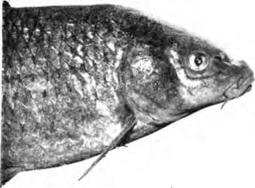
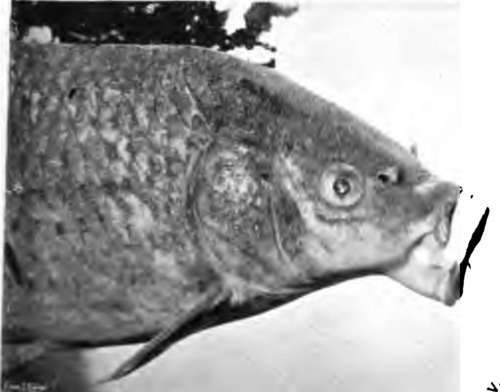
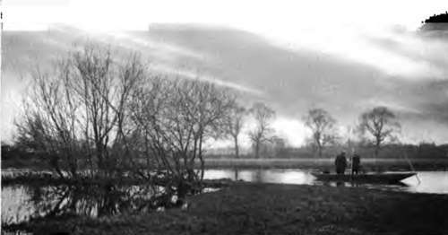
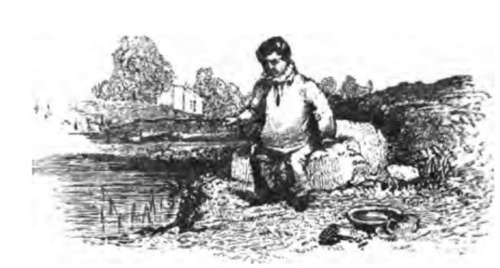
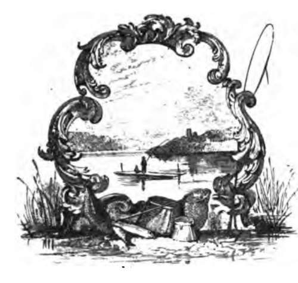

Angling For Carp. Part 3
Description
This section is from the book "Fishing", by Horace G. Hutchinson. Also available from Amazon: Fishing.
Angling For Carp. Part 3
I was fishing for bream with a 14-oz. rod, a running line of plaited silk about the thickness of cotton, a fine gut ledger trace, and a No. 5 round-bend hook mounted on very fine gut. Old George had baited the hook with one of the largest brandlings I ever saw, quite five inches long. Suddenly out went the line, forty yards at least right into the river, which was running about two miles an hour. By a twist of the rod I turned the fish, which went right away again, then straight into the hole under the bushes, Now came the struggle. I had to fairly lie down in the bottom of the punt to keep the top of the rod level with the water. This was a very anxious time-I had to hold the winch in my hand, and let out six inches at a time with a strain on the winch. The fish was fairly under the boughs. I then had to hold on and trust to the tackle. The little rod bent like the letter U ; it was a fair case of " Pull devil, pull baker." I must here remark this was the last day of the fishing season, and the occupants of several punts paid me a visit to see the performance. The tackle stood the strain with the assistance of the rod. I gave a little turn of the wrist, and the fish dashed off for the other side of the river. So I let him go, and felt sure I should, if careful, succeed. Back he came for the punt, went right under, and I had to lie down and put my rod nearly two feet into the water, round the end of the punt to clear, then out went the fish into the middle of the river, back again for the ryepeck. Now I thought it was all U. P. Old George put out his landing-net. I did not use profane language, but I told him in pure English to keep away. This duel lasted for fifty-five minutes. I managed by playing the fish on the winch to fairly kill it, and it floated on the top lifeless. Old George placed the landing-net in the water, and I drew the fish over with the line humming like a harp-string. After showing the spectators the carp, which Old George held up by the gills, and receiving an ovation from the assembled anglers, it was dropped into the well of the punt. I tried to fish again, but it was useless, my arm shook like a man suffering from palsy. We started for home. On the bank, just in front of the Swan Hotel, we found a crowd waiting to see the "Great Thames Carp," which weighed 12 lbs.
34.- Carp- Mouth Shut.
35.- Carp-mouth Open.
36.- Mooring The Punt
Carp live to be a great age and grow to a great size. Max von dem Borne says to 60 lbs. He says it varies in shape in different places, and according to the food it gets, but usually is three times as long as high, and twice as high as wide. The head is large with a stumpy snout, large thick lips, with a large barbel at the corner of the under lip and a smaller one on the upper-four in all.
The body is usually covered with large firm round scales (the fish is then called in Germany the noble or scale carp), sometimes entirely without scales (when it is called the leather carp), or with but a few very large scales along the centre line of the body (the mirror carp). In a wild state leather and mirror carp are rare, but are bred largely in ponds. The back fin is long, the third bony ray strongly toothed like a comb along the back edge of it, as is also the third ray of the anal fin. The tail is deeply forked, and with rounded points. The ventral fins stand under the front end of the back fin. The formidable throat teeth are rounded, and of a dark colour on top, and get worn down with use; opposite them in the base of the skull is the so-called carp stone, a firm horny plate; the so-called tongue or fleshy palate is very thick, puffy, and full of nerves, the real tongue is small.
The colour of the body is very different in different waters; as a rule dark brown or dark blue on top, on the sides a brass or yellow leather colour, on belly and lips yellowish. The fins are yellowish or reddish with violet tinge, with the exception of the tail, which is dark grey. In the male carp numerous white little knots or warts form on the head, back, and sides, and on the rays of the pectoral fin at spawning time; later on they turn yellow and fall off.
The carp feeds on minute animal life of all kinds, is very fond of mealy seeds, young sprouts of water plants, and especially decaying vegetable matter, and is easily fattened on all kinds of animal and vegetable refuse. It spawns between April and August. The female seeks the edges of the water where water plants abound, usually early in the day, and there accompanied by several males deposits her eggs from 300,000 to 700,000 in number. The eggs are of a light yellow colour, about 1.5 mm. in size, and are deposited at intervals of some days or weeks on stalks of grass, water plants, etc, the fish making a great commotion during the operation.
In European rivers carp increase in number very slowly, as the eggs are eaten by other fish; but in America they have got the upper hand in many rivers and, as already mentioned, threaten to exterminate the native fish. Carp culture is carried on to a very great extent in Germany, France, and Austria, where the fish is held in great esteem for the table.
The Crucian carp, a smaller member of the carp family, which rarely much exceeds two pounds, is a capital pond fish, as it bites freely and affords much sport for young anglers. It has no barbels and varies in shape a good deal in different waters, in some being short and deep in the body, in others with big head and shoulders and tapering off towards the tail.

Continue to: